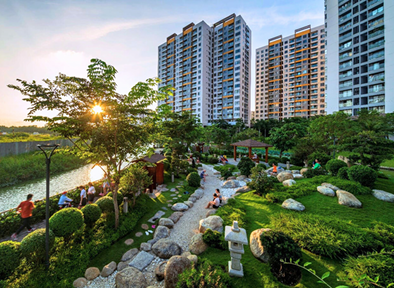

FLORA MIZUKI URBAN AREA
Project Information:
- Binh Chanh, HCMC
- 5 blocks, 1 basement & 20 floors
- 2019
Thien Phu Glass is proud to be the supplier and installer of glass items for the FLORA MIZUKI URBAN AREA project. With many years of experience and a team of professional technicians, we have successfully completed the strict technical and aesthetic requirements of the investor.
Glass products used in the project ensure safety, sound insulation, heat insulation and durability standards over time, contributing to creating a modern and luxurious beauty for the building.